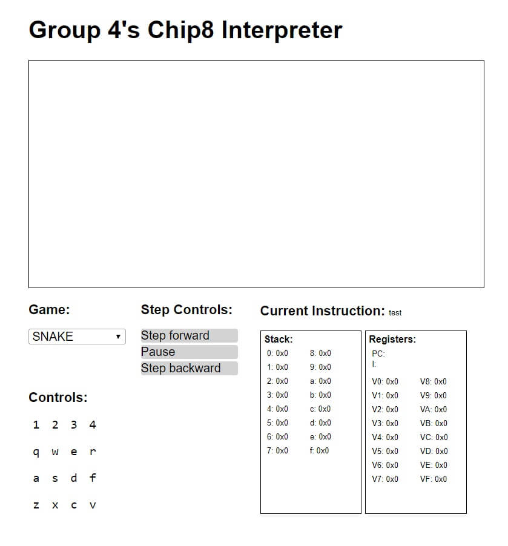

gabe
full stack software engineer
web based chip-8 emulator
intro to software engineering final
context
Chip-8 is an interpretedhaving the ability to execute instructions without compiling programming language which was developed in the 70s to make programming games on micro computers like the COSMAC VIP and Telmac 1800 8-bit. Our task was to create an emulator and two games for said emulator within our web browser, compiled for javascript and our requirements were up to my team to decide.
process
We began by assigning roles, reflecting on each teammate's skills and understanding exactly what a chip-8 interpreter does. Wikipedia was a great source of this. We researched the ins and outs of each register, instructions, etc... We then went on to build the core of the project, created a webpage to display it, connected it to the webpage and ran into many bugs. We immediately had framerate issues and issues with the actual chip-8 instructions. The instructions were broken in many places and it took us about a month of debugging to the second release to finally get it working. We then added more information, cleaned more bugs and recreated both snake and flappy bird.
what i've learned
Overall, I am very happy with the result of this project. I learned quite a bit, specifically in project and time management, javascript nuances (as I had minimal prior experience with javascript) and I practiced layout design. We all learned the importance of checklists, sprints and kanban boards in order to keep our tasks organized and on track. The most important team skill that we took care of was communication. As a team, we encouraged each other to practice good communication as much as possible. Due to this practice, we were always aware of one another's struggles. One of the things I struggled with the most was making use of the less experienced group members. I found that you should never discount them because they may have hidden skills that they are not even aware about. For example, our member who struggled the most surprised us by creating the snake clone entirely on his own, making up for lack of work previously. Once he was on board, it was smooth sailing until the end.